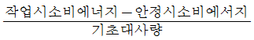
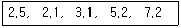

산업위생관리산업기사 (2015-03-08 기출문제)
1과목: 산업위생학 개론
1. 육체적 작업능력(PWC)이 16Kcal/min인 근로자가 1일 8시간 동안 물체 운반작업을 하고 있다. 이 때의 작업 대사량은 7kcal/min일 때 이사람이 쉬지 않고 계속 일을 할 수 있는 최대허용시간은 약 얼마인가? (단, log Tend=3.720-0.1949ㆍE)
- 4분
- 83분
- 141분
- 227분
(정답률: 65%)

2. Gordon은 재해원인 분석에 있어서의 역학적 기법의 유효성을 제창하였다. 재해와 상해발생에 관여하는 3가지 요인이 아닌 것은?
- 화학요인
- 기계요인
- 환경요인
- 개체요인
(정답률: 57%)
3. 한냉 환경에서 국소진동에 노출되는 경우 나타나는 현상으로 수지의 감각마비 등의 증상을 보이는 것은?
- Raynaud 증상
- heat exhaustion 증상
- 참호족(trench foot)증상
- heat stroke 증상
(정답률: 86%)
4. 다음 중 국제노동기구(ILO)의 “산업보건의 목표”와 가장 관계가 적은 것은?
- 노동과 노동조건으로 일어날 수 있는 건강애로부터 근로자를 보호한다.
- 작업에 있어 근로자의 정신적ㆍ육체적 적응 특히, 채용시 적정 배치한다.
- 근로자의 정신적ㆍ육체적 안녕상태를 최대한으로 유지 증진시킨다.
- 근로자가 직업병으로 판단되었을 때 신속히 회복되도록 최대한으로 잘 치료한다.
(정답률: 88%)
5. 사람이 머리를 숙이지 않고 정상적으로 VDT작업을 할 때 모니터를 바라보는 작업자의 가장 적절한 시선 각도는?
- 수평선상으로부터 아래로 10~15°
- 수평선상으로부터 아래로 20~25°
- 수평선상으로부터 위로 10~15°
- 수평선상으로부터 위로 20~25°
(정답률: 77%)
6. 다음 중 허리에 부담을 주어 요통을 유발할 수 있는 작업자세로서 가장 거리가 먼 것은?
- 큰 수레에서 물건을 꺼내기 위하여 과도하게 허리를 숙이는 작업 자세
- 높은 곳에 물건을 취급하기 위하여 어깨를 90도 이상 반복적으로 들리게 하는 작업 자세
- 낮은 작업대로 인하여 반복적으로 숙이는 작업 자세
- 측면으로 20도 이상 기우는 작업 자세
(정답률: 78%)
7. 1833년 산업보건에 관한 법률로서 실제로 효과를 거둔 최초의 법안 “공장법”을 제정한 국가는?
- 미국
- 영국
- 프랑스
- 독일
(정답률: 81%)
8. 작업환경측정 및 지정측정기간 평가 등에 관한 고시에 있어 정도관리의 구분에 해당하지 않는 것은?
- 의무정도관리
- 임시정도관리
- 수시정도관리
- 자율정도관리
(정답률: 46%)
9. 다음 중 산업위생전문가로서의 책임에 대한 내용과 가장 거리가 먼 것은?
- 이해관계가 있는 상황에서는 개입하지 않는다.
- 전문분야로서의 산업위생을 학문적으로 발전시킨다.
- 궁극적 책임은 기업주 또는 고객의 건강보호에 있다.
- 과학적방법의 착용과 자료의 해석에서 객관성을 유지한다.
(정답률: 80%)
10. 다음 중 산업피로를 예방하기 위한 방법으로 틀린 것은?
- 작업 과정에서 적절한 휴식시간을 삽입한다.
- 불필요한 동작을 피하고 에너지 소모를 줄인다.
- 동적인 작업은 운동량이 많으므로 정적인 작업으로 전환한다.
- 개인에 따른 작업 부하량을 조절한다.
(정답률: 90%)
11. 다음 중 산업피로에 관한 설명으로 틀린 것은?
- 정신적, 육체적 노동 부하에 반응하는 생체의 태도라 할 수 있다.
- 피로는 가역적인 생체변화이다.
- 정신적 피로와 신체적 피로는 일반적으로 구별하기 어렵다.
- 피로의 정도는 객관적 판단이 용이하다.
(정답률: 77%)
12. 아연에 대한 인체실험 결과 안전흡수량이 체중 kg당 0.12mg이었다. 1일 8시간 작업에서의 노출기준은 약 얼마인가? (단, 근로자의 평균 체중은 70kg, 폐환기율은 1.2m3/hr으로 한다.)
- 1.8mg/m3
- 1.5mg/m3
- 1.2mg/m3
- 0.9mg/m3
(정답률: 50%)
13. NIOSH lifting guide에서 모든 조건의 최적의 작업상태라고 할 때 권장되는 최대 무게(kg)는 얼마인가?
- 18
- 23
- 30
- 40
(정답률: 75%)
14. 다음 중 산업안전보건법령상 보건관리자의 자격기준에 해당하지 않는 자는?
- “의료법”에 의한 의사
- “의료법”에 의한 간호사
- “위생사에 관한 법률”에 의한 위생사
- “고등교육법”에 의한 전문대학에서 산업보건 관련 확과를 졸업한 자
(정답률: 87%)
15. 다음 중 상대 에너지대사율(RMR)에 관한 설명으로 틀린 사항은?
- 연령은 고려하지 않는 지수이다.
- 작업대사량을 소요시간에 대한 가중평균으로 나타낸다.

으로 산출한다.- RMR에 근거한 작업강도의 구분으로 경(經)작업은 0~1, 중(重)작업은 4~7, 격심(激甚)작업은 7이상의 값을 나타낸다.
(정답률: 49%)
16. NIOSH에서는 권장무게한계(RWL)와 최대허용한계(MPL)에 따라 중량물 취금 작업을 분류하고, 가가의 대책을 권고하고 있는데 MPL을 초과하는 경우에 대한 대책으로 가장 적절한 것은?
- 문제있는 근로자를 적절한 근로자로 교대시킨다.
- 반드시 공학적 방법을 적용하여 중량물 취급작업을 다시 설계한다.
- 대부분의 정상근로자들에게 적정한 작업조건으로 현 수준을 유지한다.
- 적절한 근로자의 선택과 적정배치 및 훈련, 그리고 작업방법의 개선이 필요하다.
(정답률: 84%)
17. 다음 중 화학물질의 노출기준에 대한 설명으로 옳은 것은?
- 노출기준은 변할 수 있다.
- 대기환경에서의 노출기준이 없는 화합물은 사업장 노출 기준을 적용한다.
- 노출기준이하의 노출에서는 모든 근로자에게 건강상의 영향이 나타나지 않는다.
- 노출기준이하에서는 직업병이 발생되지 않는 안전한 값이다.
(정답률: 58%)
18. 산업안전보건법에 따라 최근 1년간 작업공정에서 공정 설비의 작업방법의 변경, 설비의 이전, 사용 화학물질의 변경 등으로 작업환경측정결과에 영향을 주는 변화가 없는 경우로서 해당 유해인자에 대한 작업환경측정을 1년에 1회 이상으로 할 수 있는 것은?
- 작업장 또는 작업공정이 신규로 가동되는 경우
- 작업공정 내 소음의 작업환경측정 결과가 최근 2회 연속 90데시벨(dB) 미만인 경우
- 작업공정 내 소음 외의 다른 모든 인자의 작업환경측정 결과가 최근 2회 노출기준 미만인 경우
- 작업환경측정 대상 유해인자에 해당하는 화학적 인자의 측정치가 노출기준을 초과하는 경우
(정답률: 76%)
19. 금속작업 근로자에게 발생된 만성중독의 특징으로 코점막의 염증, 비중격천공 등의 증상을 일으키는 물질은?
- 납
- 6가크롬
- 수은
- 카드뮴
(정답률: 83%)
20. 직장에서 당면문제를 진지한 태도로 해결하지 않고 현재보다 낮은 단계의 정신 상태로 되돌아 가려는 행동반응을 나타내는 부적응 현상을 무엇이라고 하는가?
- 작업도피(evasion)
- 체념(resignation)
- 퇴행(degeneration)
- 구실(pretext)
(정답률: 86%)
2과목: 작업환경측정 및 평가
21. 500ml 수용액 속에 4g의 NaOH가 함유되어 있는 용액의 PH는? (단, 완전해리 기준, Na 원자량 23)
- 13.0
- 13.3
- 13.6
- 13.8
(정답률: 46%)
22. 유도결합 플라스마원자발광분석기를 이용하여 금속을 분석할 때 장ㆍ단점으로 옳지 않은 것은?
- 원자흡광광도계보다 더 좋거나 적어도 같은 정밀도를 갖는다.
- 검량선의 직선성 범위가 좁아 재현성이 우수하다.
- 화학물질에 의한 방해로부터 거의 영향을 받지 않는다.
- 원자들은 높은 온도에서 많은 복사선을 방출하므로 분광학적 방해 영향이 있을 수 잇다.
(정답률: 49%)
23. 벤젠 100ml에 디티존 0.1g을 넣어 녹인 후 이 원액을 10배 희석시키면 디티존은 몇μg/mℓ용액이 되겠는가?
- 1μg/mℓ
- 10μg/mℓ
- 100μg/mℓ
- 1000μg/mℓ
(정답률: 64%)
24. 다음 물질 중 극성이 가장 강한 것은?
- 알데하이드류
- 케톤류
- 에스테르류
- 올레핀류
(정답률: 78%)
25. 작업환경측정시 사용되는 흡착제에 관한 설명 중 옳지 않은 것은?
- 대게 극성오염물질에는 극성흡착제를, 비극성오염 물질에는 비극성 흡착제를 사용한다.
- 일반적으로 흡착관의 앞층은 100mg, 뒷층은 50mg으로 되어 있으나 다른 크기의 것은 사용한다.
- 채취효율을 높이기 위하여 흡착제에 시약을 처리하여 사용하기도 한다.
- 활성탄은 불포화 탄소결합을 가진 분자를 선택적으로 흡착하는 능력이 있다.
(정답률: 49%)
26. 옥외(태양광선이 내리쬐는 장소)에서 WBGT 측정시 사용되는 식은?
- WBGT(℃) = 0.7×자연습구온도+0.2×흑구온도+0.1×건구온도
- WBGT(℃) = 0.7×건구온도+0.2×자연습구온도+0.1×흑구온도
- WBGT(℃) = 0.7×건구온도+0.2×흑구온도=0.1×자연습구온도
- WBGT(℃) = 0.7×자연습구온도+0.2×건구온도+0.1×흑구온도
(정답률: 82%)
27. PVC 막여과지를 사용하여 채취하는 물질에 관한 내용과 가장 거리가 먼 것은?
- 유리규산을 채취하여 X-선 회절법으로 분석하는데 적절하다.
- 6가 크롬 그리고 아연산화물의 채취에 이용된다.
- 압력에 강하여 석탄건류나 증류 등의 공정에서 발생하는 PAHs 채취에 이용된다.
- 수분에 대한 영향이 크지 않기 때문에 공해성 먼지 등의 증량분석을 위한 측정에 이용된다.
(정답률: 60%)
28. 검지관 사용의 장점이라 볼 수 없는 것은?
- 사용이 간편하다.
- 전문가가 아니더라도 어느 정도만 숙지하면 사용할 수 있다.
- 빠른 시간에 측정결과를 알 수 있어 주관적인 판독을 방지할 수 있다.
- 맨홀 밀폐 공간에서의 산소부족 또는 폭발성 가스로 인한 안전이 문제가 될 때 유용하게 사용 될 수 있다.
(정답률: 70%)
29. 주물공장에서 근로자에게 노출되는 호흡성 먼지를 측정한 결과(mg/m3)가 다음과 같았다면 기하평균농도(mg/m3)는?

- 3.6
- 3.8
- 4.0
- 4.2
(정답률: 68%)
30. PVC 필터를 이용하여 먼지 포집시 필터무게는 채취 후 18.115mg이며 채취 전 무게는 14.316mg 이었다. 공기채취량이 400ℓ이라면 포집된 먼지의 농도는? (단, 공시료의 무게차이는 없었던 것으로 가정한다.)
- 8.0mg/m3
- 8.5mg/m3
- 9.0mg/m3
- 9.5mg/m3
(정답률: 69%)
31. 자연습구온도계를 이용한 습구온도 측정시간 기준으로 옳은 것은? (단, 고시 기준)
- 25분 이상
- 15분 이상
- 5분 이상
- 3분 이상
(정답률: 69%)
32. 물질을 취급 또는 보관하는 동안에 이물(異物)이 들어가거나 내용물이 손실되지 않도록 보호하는 용기는?
- 밀봉용기
- 밀폐용기
- 기밀용기
- 폐쇄용기
(정답률: 71%)
33. 소리의 음압수준이 80dB인 기계 2대와 85dB인 기계 1대가 동시에 가동되었을 때 전체 읍압 수준은?
- 83dB
- 85dB
- 87dB
- 89dB
(정답률: 67%)
34. 가스크로마토그래피를 구성하는 주요 요소와 가장 거리가 먼 것은?
- 탄색화부
- 검출기
- 컬럼오븐
- 주입부
(정답률: 63%)
35. 크로마토그래피의 분리관 성능을 표시하는 분해능을 높일 수 있는 조작으로 틀린 것은?
- 분리관의 길이를 길게 한다.
- 고정사의 양을 크게 한다.
- 시료의 양을 적게 한다.
- 고체지지체의 입자크기를 작게 한다.
(정답률: 58%)
36. 공기채취기구의 보정을 위한 1차 표준기구에 해당되는 것은?
- 가스치환병
- 건식가스미터
- 열선기류계
- 습식테스트미터
(정답률: 82%)
37. 다음 유기용제 중 활성탄관을 사용하여 효과적으로 채취할 수 없는 시료는?
- 할로겐화 탄화수소류
- 니트로벤젠류
- 케톤류
- 알코올류
(정답률: 56%)
38. 어떤 분석방법의 검출한계가 0.2mg일 때 정량한계로 가장 적절한 값은?
- 0.11mg
- 0.33mg
- 0.66mg
- 0.99mg
(정답률: 79%)
39. 석면의 농도를 표시하는 단위로 적절한 것은?
- 개/cm3
- 개/m3
- mm/ℓ
- cm/m3
(정답률: 82%)
40. 입자상 물질을 채취하기 위해 사용되는 직경분립충돌기(Cascade Impacter)에 비해 사이클론이 갖는 장점과 가장 거리가 먼 것은?
- 입자의 질량크기분포를 얻을 수 있다.
- 매체의 코팅과 같은 별도의 특별한 처리가 필요없다.
- 호흡성 먼지에 대한 자료를 쉽게 얻을 수 있다.
- 충돌기에 비해 사용이 간편하고 경제적이다.
(정답률: 59%)
3과목: 작업환경관리
41. 소음성 난청의 초기 단계에서 청력손실이 현저하게 나타나는 주파수(Hz)는?
- 1000
- 2000
- 4000
- 8000
(정답률: 70%)
42. 전리방사선의 특성을 잘못 설명한 것은?
- X-선은 전자를 가속하는 장치로부터 얻어지는 인공적인 전자파이다.
- α-입자는 투과력은 약하나, 전리작용은 강하다.
- β-입자는 α-입자에 비하여 무거워 충돌에 따른 영향이 크다.
- 중성자는 α-입자, β-입자보다 투과력이 강하다.
(정답률: 66%)
43. 다음 유해가스 중 단순 질식성 가스는?
- 메탄
- 아황산가스
- 시안화수소
- 황화수소
(정답률: 60%)
44. 작업환경의 유해인자와 건강장해의 연결이 틀린 것은?
- 자외선 - 혈소판수 감소
- 고온 - 열사병
- 기압 - 잠함병
- 적외선 - 백내장
(정답률: 69%)
45. 청력보호구인 귀마개에 관한 내용으로 틀린 것은? (단, 귀덮개 비교 기준)
- 다른 보호구와 동시에 사용할 수 있다.
- 고온작업장에서 불편 없이 사용할 수 있다.
- 착용 시간이 짧고 쉽다.
- 더러운 손으로 만짐으로써 외청도를 오염시키 수 있다.
(정답률: 78%)
46. 근로자가 귀덮개(NRR=31)를 착용하고 있는 경우 미국 OSHA의 방법으로 계산한다면 차음효과는?
- 5dB
- 8dB
- 10dB
- 12dB
(정답률: 80%)
47. 고압환경에 관한 설명으로 알맞지 않은 것은?
- 산소의 분압이 2기압이 넘으면 산소중독증세가 나타난다.
- 산소의 중독작용은 운동이나 이산화탄소의 존재로 악화된다.
- 폐내의 가스가 팽창하고 질소기포를 형성한다.
- 공기 중의 질소가스는 3기압 하에서는 자극작용을 4기압 이상에서는 마취 작용을 한다.
(정답률: 64%)
48. 마이크로파와 라디오와 방사선이 건강에 미치는 영향에 관한 설명으로 틀린 것은?
- 일반적으로 150MHz 이하의 마이크로파와 라디오파는 신체를 완전히 투과하며 흡수되어도 감지되지 않는다.
- 마이크로파의 열작용에 가장 영향을 많이 받는 기관은 생식기와 눈이다.
- 500~1000mhZ의 마이크로파에 노출된 경우 눈 수정체의 아스코르브산액 함량 급증으로 백내장이 유발된다.
- 마이크로파와 라이동파는 하전을 시키지는 못하지만 생체 분자의 진동과 회전을 시킬 수 있어 조직의 온도를 상승시키는 열작용에 의한 영향을 준다.
(정답률: 51%)
49. 작업호나경의 관리원칙 중 ‘대치’에 관한 내용으로 틀린 것은?
- 세척작업에서 사염화탄소 대신 트리클로로에틸렌으로 전환
- 소음이 많이 발생하는 리벳팅 작업 대신 너트와 볼트 작업으로 전환
- 제품의 표면 마감에 사용되는 저속, 왕복형 절삭기 대신 소형, 고속 회전식 그라인더로 대치
- 조립공정에서 많이 사용하는 소음 발생이 큰 압축공기식 임팩트 렌치를 저소음 유압식 렌치로 대치
(정답률: 56%)
50. 더운 환경에서 심한 육체적인 작업을 하면서 땀을 많이 흘릴 때 많은 물을 마시지만 신체의 염분 손실을 충당 하지 못할 때 발생하는 고열장해는?
- 열경련(Heat cramps)
- 열사병(Heat stroke)
- 열실신(Heat syncope)
- 열허탈(Heat collapse)
(정답률: 71%)
51. 적용 화학물질이 정제 벤드나이드겔, 염화비닐수지이며 분진, 전해약품제조, 원료취급작어에서 주로 사용되는 보호크림으로 가장 적절한 것은?
- 피막형크림
- 차광크림
- 소수성크림
- 친수성크림
(정답률: 75%)
52. 다음의 산소결핌에 관한 내용 중 틀린 것은?
- 산소결핍이란 공기 중 산소농도가 20% 미만을 말한다.
- 맨홀, 피트 및 물탱크 작업이 산소결핍 작업환경에 해당된다.
- 생체 중에서 산소결핍에 대하여 가장 민감한 조직은 대뇌피질이다.
- 일반적으로 공기의 산소분압의 저하는 바로 동맥혈의 산소분압 저하와 연결되어 뇌에 대한 산소 공급량의 감소를 초래한다.
(정답률: 82%)
53. 방진재인 공기스프링에 관한 설명으로 옳지 않은 것은?
- 사용진폭의 범위가 넓어 별도의 댐퍼가 필요한 경우가 적다.
- 구조가 복잡하고 시설비가 많이 소요된다.
- 자동제어가 가능하다.
- 하중의 변화에 따라 고유진동수를 일정하게 유지할 수 있따.
(정답률: 68%)
54. 귀덮개의 장점으로 틀린 것은?
- 귀마개보다 차음효과가 일반적으로 크며 개인차가 작다.
- 크기를 다양화하여 차음효과를 높일 수 있다.
- 근로자들이 착용하고 잇는지를 쉽게 확인할 수 있다.
- 귀에 이상이 있을때에도 착용할 수 있다.
(정답률: 68%)
55. 다음 중 자극성이며 물에 대한 용해도가 가장 높은 물질은?
- 암모니아
- 염소
- 포스겐
- 이산화탄소
(정답률: 68%)
56. 다음 중 전신진동 장해의 원인으로 가장 적절한 것은?
- 중장비 차량의 운전
- 전기톱 작업
- 착암기 작업
- 햄버 작업
(정답률: 70%)
57. 빛과 밝가의 단위로 사용되는 측정량과 단위를 잘못 짝지은 것은?
- 조도 : 룰스(Lux)
- 광도 : 칸델라(cd)
- 휘도 : 와트(W)
- 광속 : 루멘(lm)
(정답률: 70%)
58. 무거운 저속연장 사용으로 발생하는 진동에 의한 손의 장애에 관한 내용으로 틀린 것은? (단, 가벼운 고속연장과 비교 기준)
- 동통은 통장적으로 주증상이 아니다.
- 뼈와 퇴행성 변화는 없다.
- 손가락의 창백 현상이 특징적이다.
- 부종이 때때로 발생할 수 있다.
(정답률: 78%)
59. 채광(자연조명)에 관한 내용으로 옳은 것은?
- 창의 면적은 벽 면적의 15~20%가 이상적이다.
- 창의 면적은 벽 면적의 20~35%가 이상적이다.
- 창의 면적은 바닥 면적의 15~20%가 이상적이다.
- 창의 면적은 바닥 면적의 20~35%가 이상적이다.
(정답률: 74%)
60. 감압환경으로 인한 장해 중 만성장해로서 고압환경에 반복 노출된 때에 가장 일어나기 쉬운 속발증이며 질소 기포가 뼈의 소동맥을 막아서 일어나고 해당 부위에 경색이 일어나는 것은?
- 기흄
- 비감염성 골괴사
- 종격기종
- 혈관전색
(정답률: 63%)
4과목: 산업환기
61. 유해가스 처리 제거기술 중 가스의 용해도와 관계가 가장 깊은 것은?
- 희석제거법
- 흡착제거법
- 연소제거법
- 흡수제거법
(정답률: 45%)
62. 국소배기장치의 이송 덕트 설계에 잇어서 분지관이 연결되는 주관 확대각의 범위로 가장 적절한 것은?
- 15° 이내
- 30° 이내
- 45° 이내
- 60° 이내
(정답률: 57%)
63. 다음 중 국소배기시스템에 설치된 충만실(plenum chamber)에 있어 가장 우선적으로 높여야 하는 효율의 종류는?
- 정압효율
- 집진효율
- 정화효율
- 배기효율
(정답률: 61%)
64. 플랜지가 붙은 일반적인 형태의 외부식후드(원형 또는 정사각형)가 공간에 위치하고 있다. 개구면의 단면적이 0.5m3이고, 개구면으로부터 50cm되는 거리에서의 제어 속도를 0.3m/s가 되도록 설계하려고 한다. 이 후드의 필요환기량은 약 얼마인가?
- 56.3m3/min
- 40.5m3/min
- 36.7m3/min
- 25.2m3/min
(정답률: 35%)
65. 다음 중 후드의 종류에서 외부식 후드가 아닌 것은?
- 루바형 후드
- 그리드형 후드
- 캐노피형 후드
- 슬로트형 후드
(정답률: 54%)
66. 다음 중 전압, 속도압, 정압에 대한 설명으로 틀린 것은?
- 속도압은 항상 양압이다.
- 정압은 속도압에 의존하여 발생한다.
- 전압은 속도압과 정압을 합한 값이다.
- 송풍기의 전ㆍ후 위치에 따라 덕트 내의 정압이 음(-)이나 양(+)으로 된다.
(정답률: 72%)
67. 다음 중 일반적으로 제어속도를 결정하는 인자와 가장 거리가 먼 것은?
- 작업장 내의 온도와 습도
- 후드에서 오염원까지의 거리
- 오염물질의 종류 및 확산 상태
- 후드의 모양과 작업장 내의 기류
(정답률: 60%)
68. 작업장에서 전체환기장치를 설치하고자 하나. 다음 중 전체환기의 목적으로 볼 수 없는 것은?
- 화재나 폭발을 예방한다.
- 작업장의 온도와 습도를 조절한다.
- 유해물질의 농도를 감소시켜 건강을 유지시킨다.
- 유해물질을 발생원에서 직접 제거시켜 근로자의 노출농도를 감소시킨다.
(정답률: 63%)
69. 다음 중 전기집진기(ESP, electrostatic precipitator)의 장점이라고 볼 수 없는 것은?
- 보일러와 철강로 등에 설치할 수 있다.
- 좁은 공간에서도 설치가 가능한다.
- 고온의 입자상 물질도 처리가 가능하다.
- 넓은 범위의 입경과 분진의 농도에서 집진효율이 높다.
(정답률: 80%)
70. 에너지 절약의 일환으로 실내 공기를 재순환시켜 외부 공기와 혼합하여 공급하는 경우가 많다. 재순환 공기 중 CO2의 농도가 700ppm, 급기 중 CO2의 농도가 600ppm이었다면 급기 중 외부 공기 함량은 몇 %인가? (단, 외부 공기중 CO2의 농도는 300ppm이다.)
- 25%
- 43%
- 50%
- 86%
(정답률: 44%)
71. 총압력손실계산법 중 정압조절평형법의 단점에 해당하지 않는 것은?
- 설계시 잘못된 유량을 수정하기가 어렵다.
- 설계가 복잡하고 시간이 걸린다.
- 최대저항경로의 선정이 잘못되었을 경우 설계시 발견이 어렵다.
- 설계유량 산정이 잘못되었을 경우, 수정은 덕트 크기의 변경을 필요로 한다.
(정답률: 52%)
72. 다음 중 송풍기 상사법칙으로 옳은 것은?
- 풍량은 회전수비의 제곱에 비례한다.
- 축동력은 회전수비의 제곱에 비례한다.
- 축동력은 임펠러의 직경비에 반비례한다.
- 송풍기 정압은 회전수비의 제곱에 비례한다.
(정답률: 56%)
73. 산업환기에서의 표준상태에서 수은의 증기압은 0.0035 mmHg이다. 이 때 공기 중 수은 증기의 최고 농도는 약 몇 mg/m3인가? (단, 수은의 분자량은 200.59이다.)
- 24.88
- 30.66
- 38.33
- 44.22
(정답률: 42%)
74. 스프레이 도장, 용기 충진 등 발생기류가 높고, 유해물질이 활발하게 발생하는 장소의 제어속도로 가장 적절한 것은? (단, 미국정부산업위생전무가협의회(ACGIH)의 권고치를 기준으로 한다.)
- 0.3m/s
- 0.5m/s
- 1.5m/s
- 5.0m/s
(정답률: 43%)
75. 다음 중 국소배기장치에 주로 사용하는 터보 송풍기에 관한 설명으로 틀린 것은?
- 송풍량이 증가해도 동력이 증가하지 않는다.
- 방사 날개형 송풍기나 전향 날개형 송풍기에 비해 효율이 좋다.
- 직선 익근은 반경 방향으로 부착시킨 것으로 구조가 간단하고 보수가 용이하다.
- 고동도 분진함유 공기를 이송시킬 경우, 회전날개 뒷면에 퇴적되어 효율이 떨어진다.
(정답률: 47%)
76. 작업장의 크기가 세로 20m, 가로 30m, 높이 6m이고, 필요환기량이 120m3/min일 때 1시간당 공기교환횟수는 몇 회인가?
- 1회
- 2회
- 3회
- 4회
(정답률: 59%)
77. 융융로 상부의 공기 용량은 200m3/min, 온도는 400℃ 1기압이다. 이것은 21℃, 1기압의 상태로 환산하면 공기의 용량은 약 몇 m3/min가 되겠는가?
- 82.6
- 87.4
- 93.4
- 116.6
(정답률: 64%)
78. 다음 중 실내의 중량 절대습도가 80kg/kg, 외부의 중량 절대습도가 60kg/kg, 실내의 수증기가 시간당 3kg씩 발생할 때 수분 제거를 위하여 중량단위로 필요한 환기량(m3/min)은 약 얼마인가? (단, 공기의 비중량은 1.2kgf/m3으로 한다.)
- 0.21
- 4.17
- 7.52
- 12.50
(정답률: 21%)
79. 일반적으로 외부식 후드에 플랜지를 부착하면 약 어느정도 효율이 증가될 수 있는가? (단, 플랜지의 크기는 개구면적의 제곱근 이상으로 한다.)
- 15%
- 25%
- 35%
- 45%
(정답률: 66%)
80. 다음 중 일반적으로 사용되는 국소배기장치의 계통도를 바르게 나열한 것은?
- 후드 → 덕트 → 공기저화장치 → 송풍기
- 후드 → 공기정화장치 → 덕트 → 송풍기
- 덕트 → 공기정화장치 → 송풍기 → 후드
- 후드 → 덕트 → 송풍기 → 공기정화장치
(정답률: 79%)
최대허용시간을 Tend라고 하면, PWC × Tend = 작업 대사량이 된다. 따라서, Tend = 작업 대사량 ÷ PWC = 3360kcal ÷ 16kcal/min = 210분이다.
하지만, 이 사람이 쉬지 않고 일을 할 수 있는 최대허용시간을 구해야 하므로, 이 시간에는 일정한 간격으로 휴식을 취해야 한다. 일반적으로 1시간 동안 10분 정도의 휴식을 취한다고 하면, 최대허용시간은 Tend = 210분 ÷ (1 + 10/60) = 227분이 된다.
따라서, 정답은 "227분"이다.